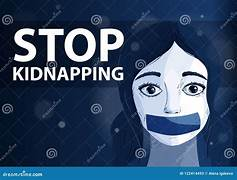

By John Sebastian C. Solano - Created on November 27, 2024
Kidnapping and sexual harassment are grave issues that disproportionately impact vulnerable populations, especially women and children. Perpetrators often exploit trust, coercion, or physical force to carry out these heinous acts. Victims are typically targeted in areas where they are isolated or lack community support.
Common tactics include pretending to be authority figures, offering fake job opportunities, or even using digital platforms to lure individuals. This leads to devastating physical and emotional consequences for victims, as well as societal impacts.
It is crucial to raise awareness about these tactics and create robust systems to prevent such crimes. Community vigilance, education, and support for survivors are key to reducing the prevalence of these acts and helping victims rebuild their lives.